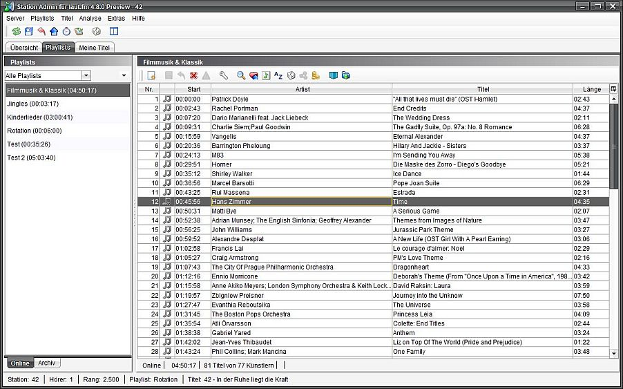
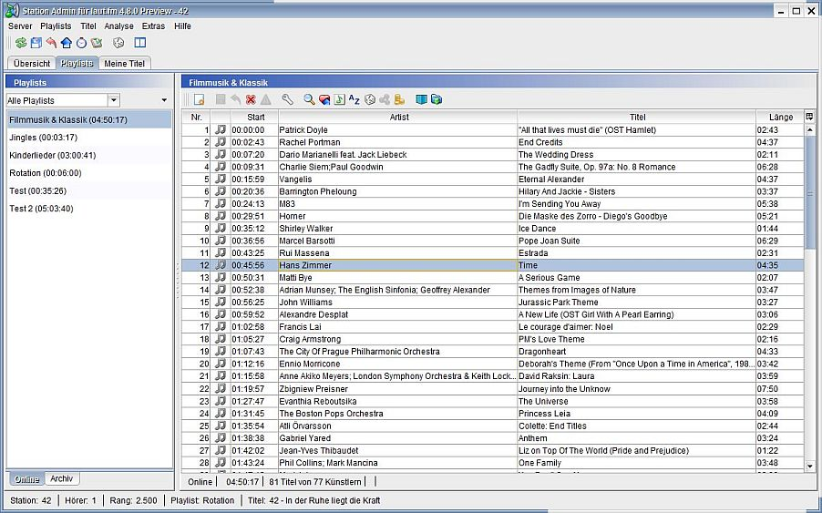
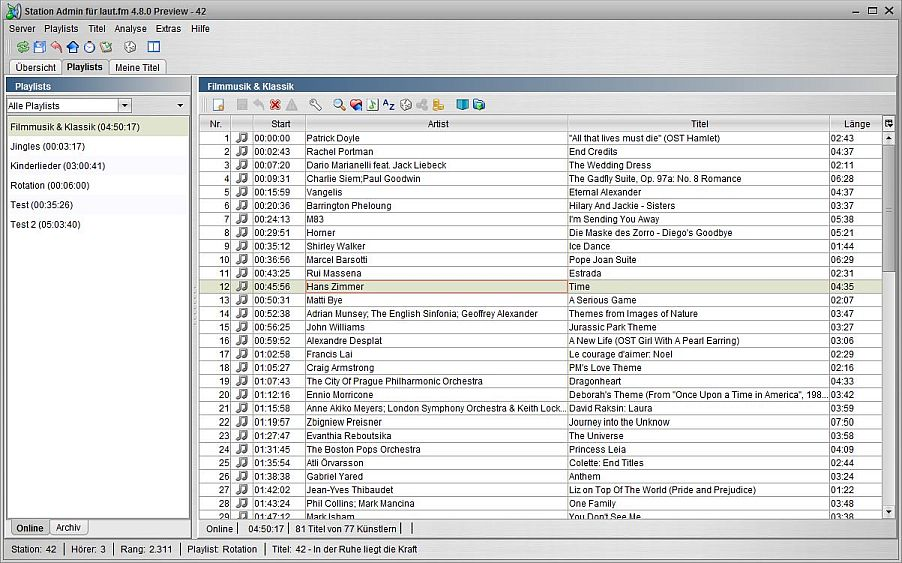
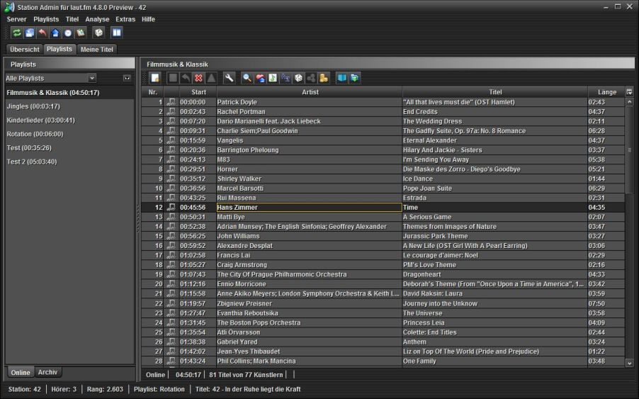
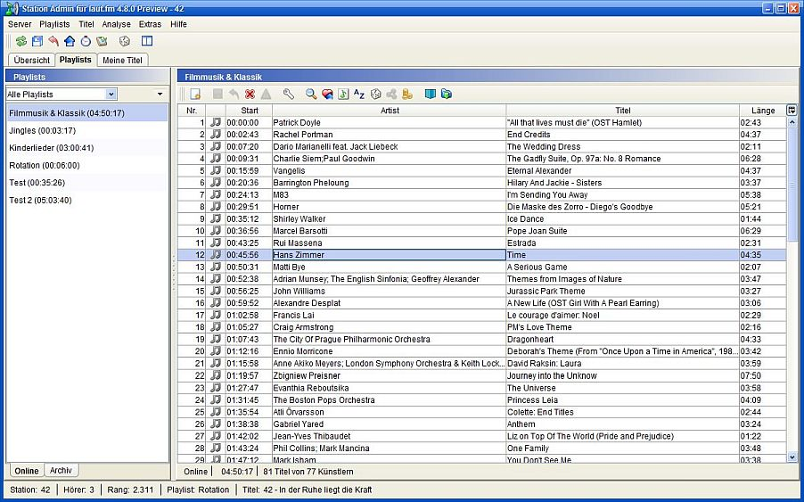
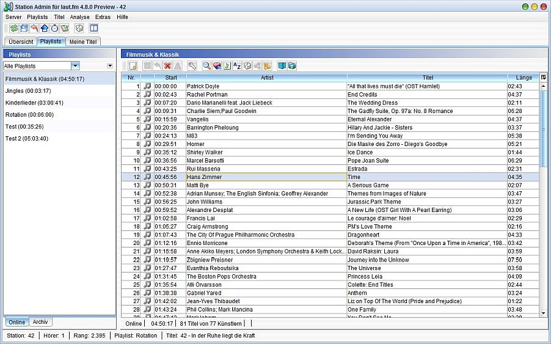
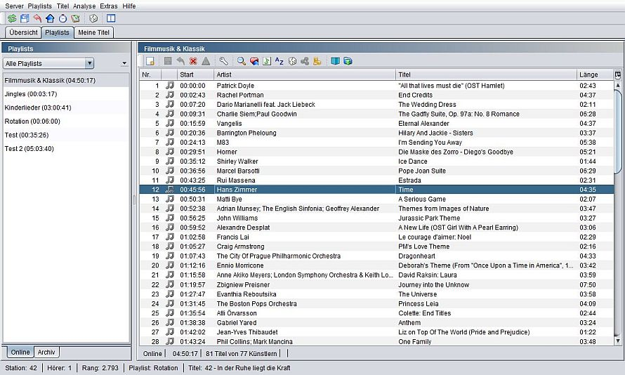
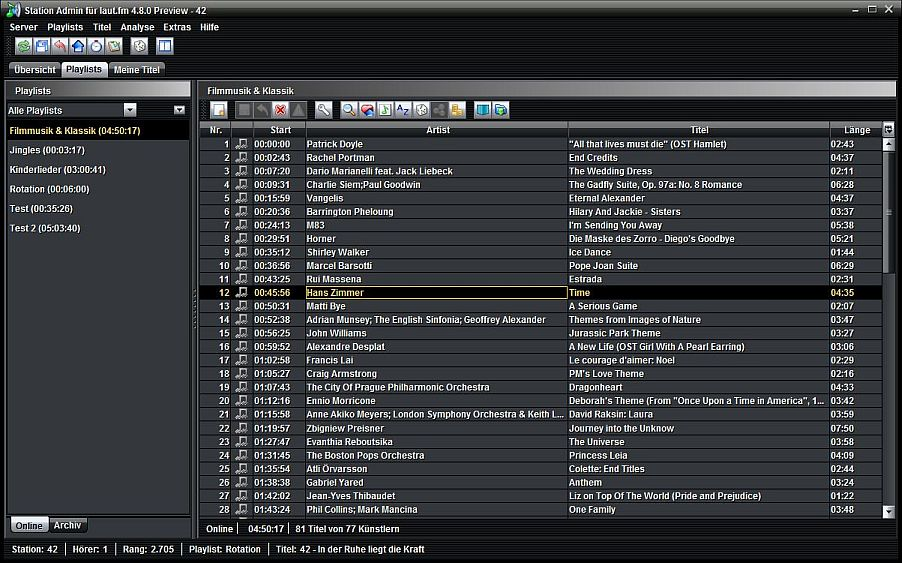

Normalerweise startet Station Admin mit einem Look and Feel dass dem Deines Betriebsystems entspricht. Du kannst das Aussehen aber verändern und z. B. auf ein dunkles Erscheinungsbild wechseln.
Erscheinungsbild ändern
Öffne im Menü und wähle dann
Verfügbare Erscheinungsbillder
Alle der folgenden Erscheinungsbilder stammen - mit Ausnahme von Nimbus - von JTattoo.
Acryl

Aero

Aluminium

Hifi

Luna

McWin

Nimbus

Noire
